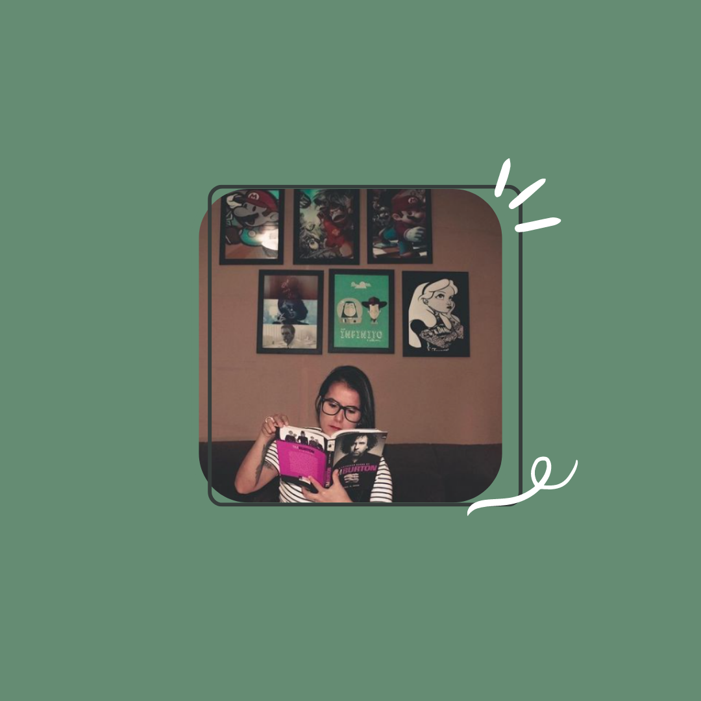

Mariana Ferreira Antunes
Dados pessoais:
- E-mai: mari.antunes911@gmail.com
- Telefone: 11. 97583-2818
Formação
- Publicidade e Propaganda - Anhanguera São Caetano do Sul 2012-2016
- Técnico em Informática- ETEC Centro Paula de Souza - 2010-2011
Cursos e Certificados
- Profissional Adaptável: Inteligência emocional, finanças pessoais e liderança- PUCRS
- FIGMA: Construindo o layout do seu site Mobile- ALURA
Experiêncioa profissional
- Fast Shop
Atual
Principais atividades: Análise de desempenho dos vendedores, contratação, capacitar talentos para formar futuros líderes, balanceamento do mix de produtos da loja, negociação, pós venda com foco no encantamento de clientes.